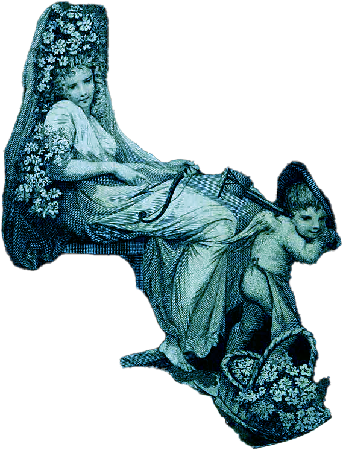

The Loves of the Plants
Originally Written by Erasmus Darwin
Edited by Tristanne Connolly, Elizabeth Bernath, and Alana Rigby
Technical Editor, Elisa Beshero-Bondar

FLORA at play with CUPID, frontispiece of The Botanic Garden Volume 2, 1790.
Erasmus Darwin wrote The Loves of the Plants (1789) to popularize the Linnaean sexual system of botanical taxonomy by portraying the romances of personified stamens and pistils. But the text far exceeds this purpose, and with its combination of ornate verse, ample polymathic footnotes, and philosophical interludes, is a hybrid work of science and imagination. Much praised and blamed and parodied in the decades following its publication, it offers a vivid snapshot of a moment before the momentous changes of the 1790s and beyond in aesthetics, politics, sexuality, and the disciplines.
This edition is based on the revised 1790 edition of The Loves of the Plants, including a full facsimile and variants in text and illustrations. Copious explanatory notes illuminate both the work itself and the international network of interdisciplinary learning captured within it, while an in-depth introduction provides cultural and biographical contextualization. An array of supplemental materials includes aids to botanical understanding (with a species index) and annotated selections of related writings, reviews, and responses, featuring the complete text of the renowned parody, The Loves of the Triangles (1798).
The Loves of the Plants © 2025 by Erasmus Darwin and edited by Tristanne Connolly is licensed under CC BY-NC-ND 4.0